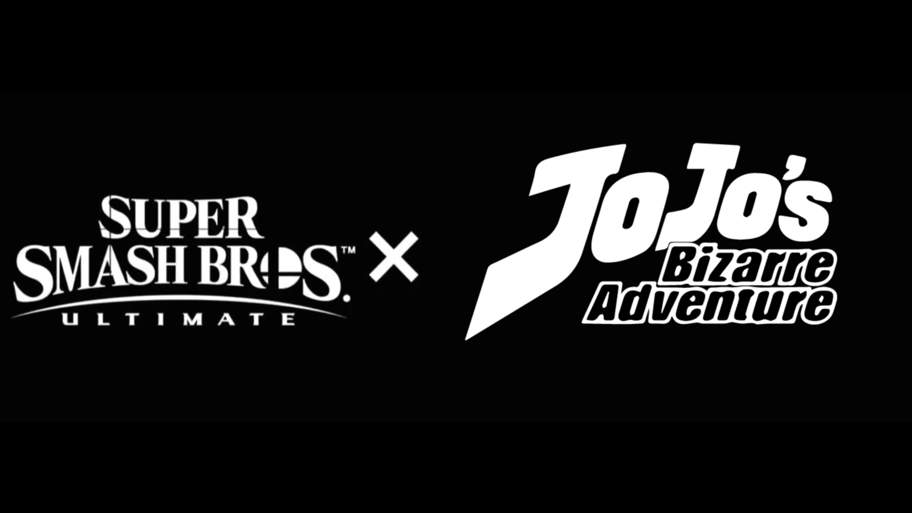

The Community Surrounding JoJo
The community for JBA is pretty similar to most anime/manga communities. The fans tend to love it dearly, and will debate character power levels, and what if situations in the universe. There are both healthy and unhealthy discussions in the community, spanning the spectrum of polite debates to full on flame wars. However, the latter is not as common as in some communities I've researched, fortunately.
Community Links
Here are some links for various communities in the JoJo's Bizarre Adventure specialization:
Random Stuff
The JoJo community has a record of having a great sense of humor. One of my favorite gags is in regards to the fake "JoJo x Smash Bros." crossover. While it would be hilarious (and amazing) to have JoJo characters in Smash, I highly doubt it would come to pass due to licensing issues, along with subject matter and adult themes in the JoJo universe. Hey, we can dream though!